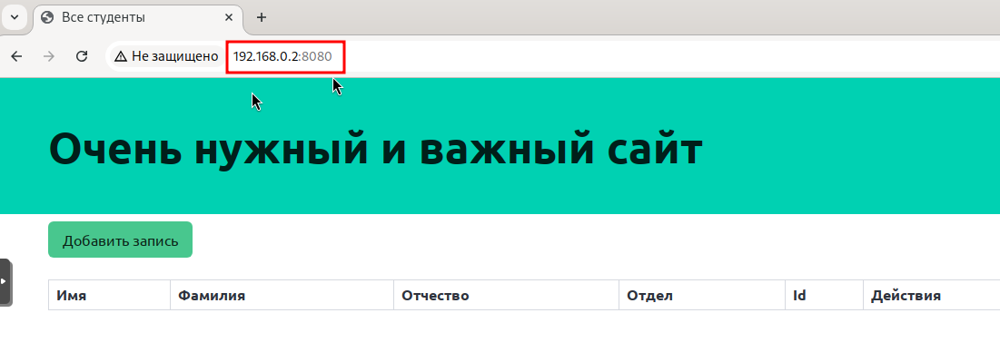
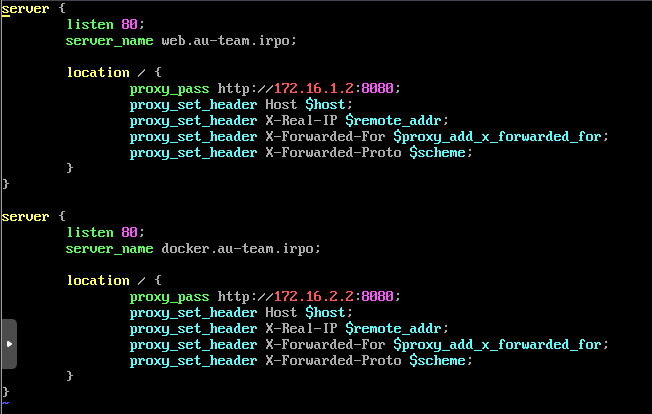
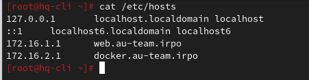
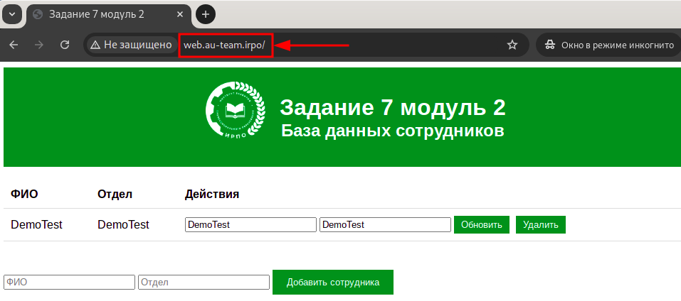
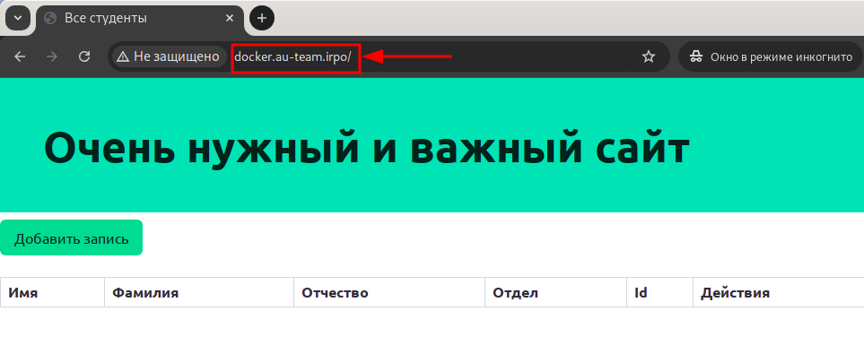
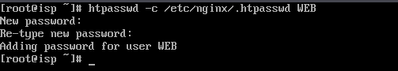
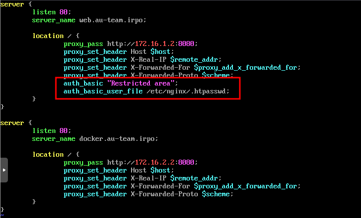
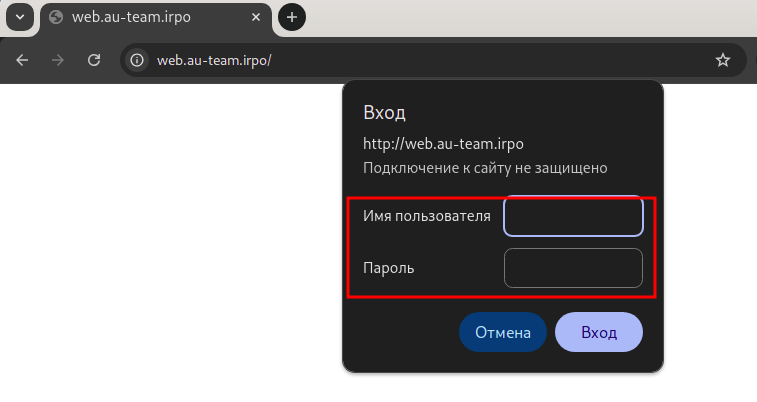
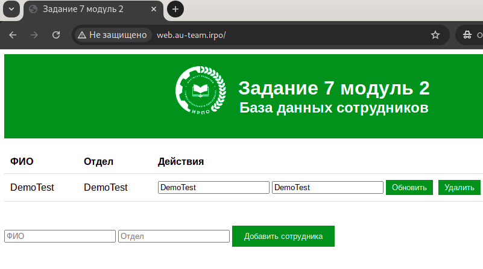

Настройка корпоративной сети HQ ↔ BR
Руководство для стенда на базе ALT Linux + FRR (Free Range Routing).
Роутеры HQ-RTR и BR-RTR — обычные Linux-машины: сеть через /etc/net/ifaces,
GRE через ip tunnel, OSPF через FRR vtysh, NAT через iptables.
00📘 Как пользоваться этой методичкой
Это руководство по настройке сети с использованием FRR (Free Range Routing). HQ-RTR и BR-RTR — обычные Linux-серверы (ALT Linux) с пакетом frr. Вся конфигурация роутинга делается через vtysh, сетевые интерфейсы настраиваются через стандартные ALT-механизмы /etc/net/ifaces/.
vtysh с синтаксисом, похожим на Cisco IOS. Страница проекта: frrouting.org.
Устройства в стенде
- ISP — внешний роутер, от него идёт интернет (ALT Linux + iptables).
- HQ-RTR — центральный офис: ALT Linux + FRR, VLAN-сабинтерфейсы, GRE, OSPF, NAT, DHCP.
- BR-RTR — филиал: ALT Linux + FRR, LAN, GRE, OSPF, NAT.
- HQ-SRV — сервер: DNS (BIND), RAID, NFS.
- BR-SRV — сервер домена Samba DC.
- HQ-CLI — рабочая станция, получает адрес по DHCP.
nano
| Ctrl+O, Enter | сохранить |
| Ctrl+X | выйти |
| Ctrl+F | поиск |
| Ctrl+K / Ctrl+U | вырезать / вставить |
| Alt+U | отменить |
vim
| i / Esc | insert / command |
| :wq Enter | сохранить и выйти |
| :q! | выйти без сохранения |
| /текст | поиск |
| :%s/old/new/g | замена |
01🔑 Учётные данные
Начальный доступ
| Устройство | Логин | Пароль |
|---|---|---|
| PVE (гипервизор) | root | P@ss090206! |
| HQ-RTR, BR-RTR (Linux) | root | P@ss090206! |
| HQ-SRV, BR-SRV | root | P@ss090206! |
| HQ-CLI | stud | P@ss090206! |
root. Привилегированный режим FRR (vtysh) тоже доступен без дополнительного пароля пользователю из группы frrvty.
Созданные по заданию
| Устройство | Логин | Пароль | Особенности |
|---|---|---|---|
| HQ-SRV, BR-SRV, HQ-RTR, BR-RTR | sshuser | P@ssw0rd | UID 2026, группа wheel, sudo без пароля, SSH порт 2026 |
02🗺️ Схема сети и адресация
┌────────────┐
│ ISP │ ens19 → uplink (интернет)
│ ALT Linux │
ens20 ───┤ ├─── ens21
172.16.1.1/28 172.16.2.1/28
└──────┬─────┘
│
┌───────────────┼───────────────┐
│ │
172.16.1.2/28 172.16.2.2/28
┌──────────────┐ ┌──────────────┐
│ HQ-RTR │◄─ GRE ─────►│ BR-RTR │
│ ALT+FRR │ 10.10.10.0/30 ALT+FRR │
└──┬───────────┘ └───────┬──────┘
│ VLAN-сабинтерфейсы │
│ ens21.100 → 192.168.100.1/27 │ ens21 → 192.168.0.1/28
│ ens21.200 → 192.168.200.1/24 │ └─ BR-SRV: .2
│ ens21.999 → 192.168.99.1/29 │
└─ HQ-SRV: 192.168.100.2
└─ HQ-CLI: 192.168.200.x (DHCP)Таблица подсетей
| Сегмент | Подсеть | Шлюз | Назначение |
|---|---|---|---|
| VLAN 100 | 192.168.100.0/27 | 192.168.100.1 | HQ-SRV |
| VLAN 200 | 192.168.200.0/24 | 192.168.200.1 | HQ-CLI (DHCP) |
| VLAN 999 | 192.168.99.0/29 | 192.168.99.1 | management |
| BR LAN | 192.168.0.0/28 | 192.168.0.1 | BR-SRV и др. |
| ISP ↔ HQ-RTR | 172.16.1.0/28 | 172.16.1.1 | uplink HQ |
| ISP ↔ BR-RTR | 172.16.2.0/28 | 172.16.2.1 | uplink BR |
| GRE Tunnel | 10.10.10.0/30 | — | HQ-RTR ↔ BR-RTR |
03⚙️ Базовая настройка устройств
/etc/net/ifaces/<iface>/. Файл ipv4address — адрес, ipv4route — маршруты, resolv.conf — DNS, options — тип и параметры интерфейса. После изменений — systemctl restart network.
ISP
bash[root@stendssa ~]# hostnamectl set-hostname isp [root@isp ~]#
HQ-RTR (ALT Linux)
Hostname и IP-форвардинг
bash[root@alt ~]# hostnamectl set-hostname hq-rtr.au-team.irpo # Включить IP-форвардинг [root@hq-rtr ~]# nano /etc/net/sysctl.conf
diff- net.ipv4.ip_forward = 0 + net.ipv4.ip_forward = 1
bash[root@hq-rtr ~]# systemctl restart network [root@hq-rtr ~]# sysctl net.ipv4.ip_forward # должно быть = 1
Uplink-интерфейс (ens20 — сторона ISP)
bash[root@hq-rtr ~]# echo "172.16.1.2/28" > /etc/net/ifaces/ens20/ipv4address [root@hq-rtr ~]# echo "nameserver 95.167.167.95" > /etc/net/ifaces/ens20/resolv.conf [root@hq-rtr ~]# echo "default via 172.16.1.1" > /etc/net/ifaces/ens20/ipv4route
Настройка работы интерфейсов
bash[root@hq-rtr ~]# echo "TYPE=eth" >> /etc/net/ifaces/ens19/options [root@hq-rtr ~]# echo "TYPE=eth" >> /etc/net/ifaces/ens20/options [root@hq-rtr ~]# echo "TYPE=eth" >> /etc/net/ifaces/ens21/options
VLAN-сабинтерфейсы на ens21 (LAN-транк)
/etc/net/ifaces/ens21.<vid>/ с файлом options (тип vlan) и ipv4address. Модуль ядра 8021q подгружается автоматически.
Прописываем содержимое ниже в файл:bash[root@hq-rtr ~]# mkdir -p /etc/net/ifaces/ens21.100 [root@hq-rtr ~]# nano /etc/net/ifaces/ens21.100/options
TYPE=vlan BOOTPROTO=static VID=100 HOST=ens21
[root@hq-rtr ~]# echo "192.168.100.1/27" > /etc/net/ifaces/ens21.100/ipv4address
Прописываем содержимое ниже в файл:[root@hq-rtr ~]# mkdir -p /etc/net/ifaces/ens21.200 [root@hq-rtr ~]# nano /etc/net/ifaces/ens21.200/options
TYPE=vlan BOOTPROTO=static VID=200 HOST=ens21
[root@hq-rtr ~]# echo "192.168.200.1/24" > /etc/net/ifaces/ens21.200/ipv4address
Прописываем содержимое ниже в файл:[root@hq-rtr ~]# mkdir -p /etc/net/ifaces/ens21.999 [root@hq-rtr ~]# nano /etc/net/ifaces/ens21.999/options
TYPE=vlan BOOTPROTO=static VID=999 HOST=ens21
[root@hq-rtr ~]# echo "192.168.99.1/29" > /etc/net/ifaces/ens21.999/ipv4address
[root@hq-rtr ~]# systemctl restart network [root@hq-rtr ~]# ip -c a
BR-RTR (ALT Linux)
Hostname и IP-форвардинг
bash[root@alt ~]# hostnamectl set-hostname br-rtr.au-team.irpo [root@br-rtr ~]# nano /etc/net/sysctl.conf
diff- net.ipv4.ip_forward = 0 + net.ipv4.ip_forward = 1
bash[root@br-rtr ~]# systemctl restart network [root@br-rtr ~]# sysctl net.ipv4.ip_forward # = 1
Настройка работы интерфейсов
bash[root@br-rtr ~]# echo "TYPE=eth" >> /etc/net/ifaces/ens19/options [root@br-rtr ~]# echo "TYPE=eth" >> /etc/net/ifaces/ens20/options [root@br-rtr ~]# echo "TYPE=eth" >> /etc/net/ifaces/ens21/options
Uplink (ens20) и LAN (ens21)
bash# Uplink [root@br-rtr ~]# echo "172.16.2.2/28" > /etc/net/ifaces/ens20/ipv4address [root@br-rtr ~]# echo "nameserver 95.167.167.95" > /etc/net/ifaces/ens20/resolv.conf [root@br-rtr ~]# echo "default via 172.16.2.1" > /etc/net/ifaces/ens20/ipv4route # LAN [root@br-rtr ~]# echo "192.168.0.1/28" > /etc/net/ifaces/ens21/ipv4address [root@br-rtr ~]# systemctl restart network [root@br-rtr ~]# ip -c a
HQ-SRV
bash[root@alt ~]# hostnamectl set-hostname hq-srv.au-team.irpo [root@hq-srv ~]# echo "192.168.100.2/27" > /etc/net/ifaces/ens19/ipv4address [root@hq-srv ~]# echo "default via 192.168.100.1" > /etc/net/ifaces/ens19/ipv4route [root@hq-srv ~]# echo "nameserver 95.167.167.95" > /etc/net/ifaces/ens19/resolv.conf [root@hq-srv ~]# systemctl restart network [root@hq-srv ~]# ip -c a
BR-SRV
bash[root@alt ~]# hostnamectl set-hostname br-srv.au-team.irpo [root@br-srv ~]# echo "192.168.0.2/28" > /etc/net/ifaces/ens19/ipv4address [root@br-srv ~]# echo "default via 192.168.0.1" > /etc/net/ifaces/ens19/ipv4route [root@br-srv ~]# echo "nameserver 95.167.167.95" > /etc/net/ifaces/ens19/resolv.conf [root@br-srv ~]# systemctl restart network [root@br-srv ~]# ip -c a
HQ-CLI
Hostname через ЦУС (Меню → Системные → Центр управления системой) или в терминале:
bash[stud@hq-cli ~]$ su -c "hostnamectl set-hostname hq-cli.au-team.irpo" [stud@hq-cli ~]$ hostname -f # hq-cli.au-team.irpo
04🌍 Настройка ISP: IP, NAT, форвардинг
bash# Скопировать шаблон интерфейса [root@isp ~]# cp -r /etc/net/ifaces/ens19 /etc/net/ifaces/ens20 [root@isp ~]# cp -r /etc/net/ifaces/ens19 /etc/net/ifaces/ens21 # Убрать маршрут по умолчанию у внутренних интерфейсов [root@isp ~]# rm -rf /etc/net/ifaces/ens2*/ipv4route # Назначить адреса [root@isp ~]# echo "172.16.1.1/28" > /etc/net/ifaces/ens20/ipv4address [root@isp ~]# echo "172.16.2.1/28" > /etc/net/ifaces/ens21/ipv4address [root@isp ~]# systemctl restart network [root@isp ~]# ip -c a
Форвардинг
bash[root@isp ~]# nano /etc/net/sysctl.conf
diff- net.ipv4.ip_forward = 0 + net.ipv4.ip_forward = 1
bash[root@isp ~]# systemctl restart network [root@isp ~]# sysctl net.ipv4.ip_forward # NAT (MASQUERADE) [root@isp ~]# iptables -t nat -A POSTROUTING -s 172.16.1.0/28 -o ens19 -j MASQUERADE [root@isp ~]# iptables -t nat -A POSTROUTING -s 172.16.2.0/28 -o ens19 -j MASQUERADE [root@isp ~]# iptables-save >> /etc/sysconfig/iptables [root@isp ~]# systemctl enable --now iptables [root@isp ~]# iptables -t nat -L -n -v # проверка
11🌐 NAT на роутерах (iptables)
iptables MASQUERADE на внешнем интерфейсе. Правила сохраняются в /etc/sysconfig/iptables и восстанавливаются сервисом iptables.HQ-RTR
bash# MASQUERADE для всех внутренних подсетей через uplink ens20 [root@hq-rtr ~]# iptables -t nat -A POSTROUTING -s 192.168.100.0/27 -o ens20 -j MASQUERADE [root@hq-rtr ~]# iptables -t nat -A POSTROUTING -s 192.168.200.0/24 -o ens20 -j MASQUERADE [root@hq-rtr ~]# iptables -t nat -A POSTROUTING -s 192.168.99.0/29 -o ens20 -j MASQUERADE # Туннельный трафик NAT-ить не нужно — он уже инкапсулирован # Сохранить и активировать при загрузке [root@hq-rtr ~]# iptables-save >> /etc/sysconfig/iptables [root@hq-rtr ~]# systemctl enable --now iptables [root@hq-rtr ~]# iptables -t nat -L -n -v # проверка
BR-RTR
bash[root@br-rtr ~]# iptables -t nat -A POSTROUTING -s 192.168.0.0/28 -o ens20 -j MASQUERADE [root@br-rtr ~]# iptables-save >> /etc/sysconfig/iptables [root@br-rtr ~]# systemctl enable --now iptables [root@br-rtr ~]# iptables -t nat -L -n -v
05🔌 Проверка связи роутеров с ISP
К этому моменту uplink-адреса уже прописаны (раздел 03). Проверяем связь:
HQ-RTR
bash[root@hq-rtr ~]# ping -c3 172.16.1.1 # ISP [root@hq-rtr ~]# ping -c3 ya.ru # интернет через ISP NAT [root@hq-rtr ~]# ip route
BR-RTR
bash[root@br-rtr ~]# ping -c3 172.16.2.1 [root@br-rtr ~]# ping -c3 ya.ru [root@br-rtr ~]# ip route
06🦓 Установка и настройка FRR
Установка пакета
bash[root@hq-rtr ~]# apt-get update && apt-get install -y frr frr-pythontools
Включить демоны ospfd
В файле /etc/frr/daemons включить нужные демоны:
bash[root@hq-rtr ~]# nano /etc/frr/daemons
diff- ospfd=no + ospfd=yes
Запуск FRR
bash[root@hq-rtr ~]# systemctl enable --now frr [root@hq-rtr ~]# systemctl status frr
enable / configure terminal / end. Сохранение конфигурации: write или copy running-config startup-config. Файл хранится в /etc/frr/frr.conf.
Таблица команд vtysh vs EcoRouter
| Действие | EcoRouter | FRR vtysh |
|---|---|---|
| Привилегированный режим | enable | vtysh (уже в нём) |
| Режим конфигурации | configure terminal | configure terminal |
| Сохранение конфига | write memory | write или wr |
| Просмотр интерфейсов | show ip interface brief | show interface brief |
| Таблица маршрутов | show ip route | show ip route |
| OSPF-соседи | show ip ospf neighbor | show ip ospf neighbor |
| Выход из режима | exit | exit / end |
07👤 Создание пользователей
useradd. Никаких EcoRouter-специфичных команд нет.
HQ-SRV / BR-SRV / HQ-RTR / BR-RTR
Выполнить на каждой машине:
bash[root@hq-rtr ~]# useradd -u 2026 sshuser [root@hq-rtr ~]# passwd sshuser # ввести P@ssw0rd [root@hq-rtr ~]# usermod -aG wheel sshuser [root@hq-rtr ~]# echo "sshuser ALL=(ALL:ALL) NOPASSWD: ALL" >> /etc/sudoers
08🔒 Настройка SSH
| Параметр | Значение |
|---|---|
| Порт | 2026 |
| Разрешённые пользователи | sshuser |
| MaxAuthTries | 2 |
| Banner | Authorized access only! |
Выполнить на каждом Linux-устройстве (HQ-SRV, BR-SRV, HQ-RTR, BR-RTR):
bash[root@hq-rtr ~]# echo "Port 2026" >> /etc/openssh/sshd_config [root@hq-rtr ~]# echo "AllowUsers sshuser" >> /etc/openssh/sshd_config [root@hq-rtr ~]# echo "MaxAuthTries 2" >> /etc/openssh/sshd_config [root@hq-rtr ~]# echo "Banner /etc/openssh/banner" >> /etc/openssh/sshd_config [root@hq-rtr ~]# echo "Authorized access only!" > /etc/openssh/banner [root@hq-rtr ~]# systemctl restart sshd [root@hq-rtr ~]# ssh -p 2026 sshuser@localhost
09🛡️ GRE-туннель (Linux ip tunnel)
ip tunnel), сохраняется в /etc/net/ifaces/ для автоподнятия при рестарте. IP-адрес туннеля назначается тут же; OSPF запустим поверх него в следующем разделе.
| Конец туннеля | Адрес | Local | Remote |
|---|---|---|---|
| HQ-RTR | 10.10.10.1/30 | 172.16.1.2 | 172.16.2.2 |
| BR-RTR | 10.10.10.2/30 | 172.16.2.2 | 172.16.1.2 |
HQ-RTR — создание GRE в /etc/net/ifaces
Вносим в файл следующее содержимое:bash[root@hq-rtr ~]# mkdir -p /etc/net/ifaces/tunnel0 [root@hq-rtr ~]# nano /etc/net/ifaces/tunnel0/options
Сохраняем (Ctrl-S, Ctrl-X), и пишем следующееTYPE=iptun TUNTYPE=gre TUNLOCAL=172.16.1.2 TUNREMOTE=172.16.2.2 BOOTPROTO=static
[root@hq-rtr ~]# echo "10.10.10.1/30" > /etc/net/ifaces/tunnel0/ipv4address
[root@hq-rtr ~]# systemctl restart network [root@hq-rtr ~]# ip -c a
BR-RTR — создание GRE
Вносим в файл следующее содержимое:bash[root@br-rtr ~]# mkdir -p /etc/net/ifaces/tunnel0 [root@br-rtr ~]# nano /etc/net/ifaces/tunnel0/options
Сохраняем (Ctrl-S, Ctrl-X), и пишем следующееTYPE=iptun TUNTYPE=gre TUNLOCAL=172.16.2.2 TUNREMOTE=172.16.1.2 BOOTPROTO=static
[root@br-rtr ~]# echo "10.10.10.2/30" > /etc/net/ifaces/tunnel0/ipv4address [root@br-rtr ~]# systemctl restart network [root@br-rtr ~]# ip -c a
Проверка GRE
bash# С HQ-RTR пинговать другой конец туннеля [root@hq-rtr ~]# ping -c3 10.10.10.2
ip_forward=1 включён на обоих роутерах и на ISP. Проверьте, что ens20 (uplink) поднят и доступен: ping 172.16.1.1 с HQ-RTR, ping 172.16.2.1 с BR-RTR.10🔁 OSPF через FRR vtysh
| Параметр | Значение |
|---|---|
| Process ID | 1 (в FRR — один OSPF-процесс) |
| Area | 0 (backbone) |
| Аутентификация | MD5, ключ P@ssw0rd (key id 1) |
| Активный интерфейс | только tunnel0 |
no passive-interface tunnel0. Это безопаснее, чем перечислять каждый исключаемый интерфейс.
ISP
bash[root@isp ~]# vtysh
plaintextisp# configure terminal isp(config)# router ospf isp(config-router)# network 172.16.1.0/28 area 0 isp(config-router)# network 172.16.2.0/28 area 0 isp(config-router)# exit isp(config)# end isp# write isp# exit [root@isp]# systemctl restart frr
HQ-RTR
bash[root@hq-rtr ~]# vtysh
plaintexthq-rtr# configure terminal hq-rtr(config)# router ospf hq-rtr(config-router)# network 172.16.1.0/28 area 0 hq-rtr(config-router)# network 192.168.100.0/27 area 0 hq-rtr(config-router)# network 192.168.200.0/24 area 0 hq-rtr(config-router)# network 192.168.99.0/29 area 0 hq-rtr(config-router)# exit hq-rtr(config)# end hq-rtr# write hq-rtr# exit [root@hq-rtr]# systemctl restart frr
BR-RTR
bash[root@br-rtr ~]# vtysh
plaintextbr-rtr# configure terminal br-rtr(config)# router ospf br-rtr(config-router)# network 172.16.2.0/28 area 0 br-rtr(config-router)# network 192.168.0.0/28 area 0 br-rtr(config-router)# exit br-rtr(config)# end br-rtr# write br-rtr# exit [root@br-rtr]# systemctl restart frr
Проверка OSPF (ПРОВЕРКА ПРИМЕРНАЯ!!!!)
plaintexthq-rtr# show ip ospf neighbor Neighbor ID Pri State Dead Time Address Interface 10.10.10.2 1 Full/DR 00:00:38 10.10.10.2 tunnel0:10.10.10.1 hq-rtr# show ip route ospf O>* 192.168.0.0/28 [110/20] via 10.10.10.2, tunnel0
ping 10.10.10.2 — GRE работает; (2) MD5-ключи совпадают на обоих концах (чувствительно к регистру!); (3) systemctl status frr — демоны zapfd и ospfd запущены.★🦓 Шпаргалка FRR vtysh
Диагностика OSPF
| Команда | Что показывает |
|---|---|
show ip ospf neighbor | Список OSPF-соседей и их состояние |
show ip ospf interface tunnel0 | Параметры OSPF на туннеле (auth, hello timer) |
show ip ospf database | LSDB — база данных топологии |
show ip route ospf | Маршруты, полученные по OSPF |
show ip route | Полная таблица маршрутизации |
debug ospf packet all | Дебаг OSPF-пакетов (выключить: no debug all) |
Диагностика GRE
| Команда | Что делает |
|---|---|
ip -c a | Адрес и состояние туннеля |
ping 10.10.10.2 | Связность через GRE |
tcpdump -i ens20 proto gre | Перехват GRE-пакетов на uplink |
Сохранение конфига FRR
plaintexthq-rtr# write Building Configuration... Configuration saved to /etc/frr/frr.conf
frr.service), конфиг читается из /etc/frr/frr.conf. GRE-туннель поднимается через systemctl restart network (конфиг в /etc/net/ifaces/tunnel0/).12📡 DHCP на VLAN 200 (ISC DHCP)
dhcp-server (ISC DHCP) непосредственно на HQ-RTR.Параметры пула
| Параметр | Значение |
|---|---|
| Pool | 192.168.200.2 – 192.168.200.254 |
| Маска | /24 |
| Шлюз | 192.168.200.1 |
| DNS | 192.168.100.2 (HQ-SRV) |
| Domain | au-team.irpo |
HQ-RTR — установка и настройка
bash[root@hq-rtr ~]# apt-get update && apt-get install -y dhcp-server
bash[root@hq-rtr ~]# nano /etc/dhcp/dhcpd.conf
plaintextdefault-lease-time 600; max-lease-time 7200; authoritative; subnet 192.168.200.0 netmask 255.255.255.0 { range 192.168.200.2 192.168.200.254; option routers 192.168.200.1; option domain-name-servers 192.168.100.2; option domain-name "au-team.irpo"; }
Указать интерфейс, на котором слушает DHCP-сервер:
bash[root@hq-rtr ~]# nano /etc/sysconfig/dhcpd
Найти строку DHCPDARGS и заменить:
diff- DHCPDARGS= + DHCPDARGS="ens21.200"
bash[root@hq-rtr ~]# systemctl enable --now dhcpd [root@hq-rtr ~]# systemctl status dhcpd
Проверка
bash# На HQ-CLI [stud@hq-cli ~]$ ip -c a # 192.168.200.x/24 [stud@hq-cli ~]$ ip route # default via 192.168.200.1 [stud@hq-cli ~]$ cat /etc/resolv.conf # nameserver 192.168.100.2
12🌐 DNS-сервер (BIND) на HQ-SRV
Основной DNS-сервер реализован на HQ-SRV. Сервер отвечает за прямое (A) и обратное (PTR) разрешение имён в зоне au-team.irpo. В качестве форвардера используется публичный DNS 95.167.167.95 (подойдёт любой общедоступный — например 77.88.8.7, 77.88.8.3).
Таблица записей
| Устройство | FQDN | Тип | Адрес |
|---|---|---|---|
| HQ-RTR | hq-rtr.au-team.irpo | A, PTR | 192.168.100.1 · 192.168.200.1 · 192.168.99.1 |
| BR-RTR | br-rtr.au-team.irpo | A | 192.168.0.1 |
| HQ-SRV | hq-srv.au-team.irpo | A, PTR | 192.168.100.2 |
| HQ-CLI | hq-cli.au-team.irpo | A, PTR | 192.168.200.2 |
| BR-SRV | br-srv.au-team.irpo | A | 192.168.0.2 |
| ISP → HQ-RTR | docker.au-team.irpo | A | 172.16.1.1 |
| ISP → BR-RTR | web.au-team.irpo | A | 172.16.2.1 |
1. Установка BIND
bash[root@hq-srv ~]# apt-get update && apt-get install bind bind-utils -y
2. options.conf — слушающий адрес, форвардер, доступ
bash[root@hq-srv ~]# nano /var/lib/bind/etc/options.conf
В файле меняем 3 строки. Поиск по строке — Ctrl+W, ввести искомое (например listen-on), Enter.
diff- listen-on { 127.0.0.1; }; + listen-on { 192.168.100.2; }; - forwarders { }; + forwarders { 95.167.167.95; }; - allow-query { localhost; }; + allow-query { any; };
Остальные строки в options.conf не трогаем. Итоговый рабочий блок выглядит так:
bindoptions { version "unknown"; directory "/etc/bind/zone"; dump-file "/var/run/named/named_dump.db"; statistics-file "/var/run/named/named.stats"; recursing-file "/var/run/named/named.recursing"; secroots-file "/var/run/named/named.secroots"; // disables the use of a PID file pid-file none; listen-on { 192.168.100.2; }; listen-on-v6 { ::1; }; // forward only; forwarders { 95.167.167.95; }; allow-query { any; }; };
listen-on— адрес и порт, на которых BIND принимает запросы.forwarders— куда пересылать запросы по зонам, за которые сервер не отвечает.allow-query— кому разрешено задавать обычные запросы (здесь — всем).
3. rfc1912.conf — описание зон
bash[root@hq-srv ~]# nano /var/lib/bind/etc/rfc1912.conf
В конец файла добавить:
bindzone "au-team.irpo" { type master; file "au-team.irpo"; }; zone "100.168.192.in-addr.arpa" { type master; file "100.168.192.in-addr.arpa"; }; zone "200.168.192.in-addr.arpa" { type master; file "200.168.192.in-addr.arpa"; };
4. Создание файлов зон из шаблона
bash[root@hq-srv ~]# cp /var/lib/bind/etc/zone/empty /var/lib/bind/etc/zone/au-team.irpo [root@hq-srv ~]# cp /var/lib/bind/etc/zone/empty /var/lib/bind/etc/zone/100.168.192.in-addr.arpa [root@hq-srv ~]# cp /var/lib/bind/etc/zone/empty /var/lib/bind/etc/zone/200.168.192.in-addr.arpa
5. Прямая зона au-team.irpo
bash[root@hq-srv ~]# nano /var/lib/bind/etc/zone/au-team.irpo
bind-zone$TTL 1D @ IN SOA au-team.irpo. root.au-team.irpo. ( 2025062300 ; serial 12H ; refresh 1H ; retry 1W ; expire 1H ; ncache ) IN NS au-team.irpo. @ IN A 192.168.100.2 hq-srv IN A 192.168.100.2 hq-cli IN A 192.168.200.2 hq-rtr IN A 192.168.100.1 hq-rtr IN A 192.168.200.1 hq-rtr IN A 192.168.99.1 docker IN A 172.16.1.1 web IN A 172.16.2.1 br-srv IN A 192.168.0.2 br-rtr IN A 192.168.0.1
6. Обратная зона 100.168.192.in-addr.arpa
bash[root@hq-srv ~]# nano /var/lib/bind/etc/zone/100.168.192.in-addr.arpa
bind-zone$TTL 1D @ IN SOA au-team.irpo. root.au-team.irpo. ( 2025062300 ; serial 12H ; refresh 1H ; retry 1W ; expire 1H ; ncache ) IN NS au-team.irpo. 1 IN PTR hq-rtr.au-team.irpo. 2 IN PTR hq-srv.au-team.irpo.
7. Обратная зона 200.168.192.in-addr.arpa
bash[root@hq-srv ~]# nano /var/lib/bind/etc/zone/200.168.192.in-addr.arpa
bind-zone$TTL 1D @ IN SOA au-team.irpo. root.au-team.irpo. ( 2025062300 ; serial 12H ; refresh 1H ; retry 1W ; expire 1H ; ncache ) IN NS au-team.irpo. 1 IN PTR hq-rtr.au-team.irpo. 2 IN PTR hq-cli.au-team.irpo.
8. Ключ rndc
Чтобы при ошибке в конфигурации systemctl restart bind не «убил» рабочий сервис, используется утилита rndc — она перезагружает зоны без полного рестарта. Сгенерируем ключ и оставим только секцию key (первые 5 строк):
bash[root@hq-srv ~]# rndc-confgen > /var/lib/bind/etc/rndc.key [root@hq-srv ~]# sed -i '6,$d' /var/lib/bind/etc/rndc.key [root@hq-srv ~]# cat /var/lib/bind/etc/rndc.key
Должно остаться примерно так (секрет у вас будет свой):
bind# Start of rndc.conf key "rndc-key" { algorithm hmac-sha256; secret "SKB1FfUzpWq44SPhErFg5+q5SiSvzp8fklbrZQvNvzs="; };
named-checkconf ругнётся:
/etc/bind/rndc.key:1: key 'rndc-key' must have both 'secret' and 'algorithm' definedsed были «умные» кавычки ‘ ’ — bash их не примет. Здесь используются обычные одиночные ' '.9. Права на файлы зон и проверка конфигурации
bash[root@hq-srv ~]# chown -R root:named /etc/bind/zone/* [root@hq-srv ~]# ls -l /etc/bind/zone/ [root@hq-srv ~]# named-checkconf [root@hq-srv ~]# named-checkconf -z
Команда named-checkconf -z должна показать загрузку всех зон с serial:
outputzone localhost/IN: loaded serial 2025062300 zone localdomain/IN: loaded serial 2025062300 zone 127.in-addr.arpa/IN: loaded serial 2025062300 zone 0.in-addr.arpa/IN: loaded serial 2025062300 zone 255.in-addr.arpa/IN: loaded serial 2025062300 zone au-team.irpo/IN: loaded serial 2025062300 zone 100.168.192.in-addr.arpa/IN: loaded serial 2025062300 zone 200.168.192.in-addr.arpa/IN: loaded serial 2025062300
NS '…' has no address records (A or AAAA)
zone au-team.irpo/IN: NS 'au-team.irpo' has no address records (A or AAAA)
zone au-team.irpo/IN: not loaded due to errors.
_default/au-team.irpo/IN: bad zoneNS указывает на сам апекс (au-team.irpo.), но у апекса нет A-записи. Фикс: в прямой зоне au-team.irpo сразу под строкой с NS добавить A-запись для апекса:
IN NS au-team.irpo.
+ @ IN A 192.168.100.2NS au-team.irpo. уже валиден, потому что у имени au-team.irpo. теперь есть A-запись (BIND проверяет это глобально). После правки — named-checkconf -z и systemctl restart bind (или rndc reload).
10. Запуск службы
bash[root@hq-srv ~]# systemctl enable --now bind.service [root@hq-srv ~]# systemctl status bind.service
В выводе должно быть Loaded: ... enabled и Active: active (running).
11. Проверка с HQ-SRV
bash[root@hq-srv ~]# cat /etc/resolv.conf # search au-team.irpo # nameserver 192.168.100.2 [root@hq-srv ~]# ping -c3 ya.ru
Ожидаемый результат — 3 received, 0% packet loss: значит резолвинг через локальный BIND с форвардингом во внешний DNS работает.
12. Проверка с HQ-CLI
Записи типа PTR
bash[user@hq-cli ~]$ host 192.168.100.1 1.100.168.192.in-addr.arpa domain name pointer hq-rtr.au-team.irpo. [user@hq-cli ~]$ host 192.168.200.1 1.200.168.192.in-addr.arpa domain name pointer hq-rtr.au-team.irpo. [user@hq-cli ~]$ host 192.168.100.2 2.100.168.192.in-addr.arpa domain name pointer hq-srv.au-team.irpo. [user@hq-cli ~]$ host 192.168.200.2 2.200.168.192.in-addr.arpa domain name pointer hq-cli.au-team.irpo.
14🕒 Часовой пояс
timedatectl. Нет EcoRouter-специфичного ntp timezone.Выполнить на всех машинах (ISP, HQ-RTR, BR-RTR, HQ-SRV, BR-SRV, HQ-CLI):
bash[root@hq-rtr ~]# timedatectl set-timezone Europe/Samara [root@hq-rtr ~]# timedatectl
apt-get install -y tzdata14🏛️ Контроллер домена Samba DC на BR-SRV
Имя домена — au-team.irpo. На BR-SRV поднимается Samba в режиме DC; HQ-CLI вводится в домен; создаются 5 пользователей hquser1…hquser5 в группе hq; группе hq разрешается sudo только для cat, grep, id.
control и roleadd отсутствуютВ этом образе ALT нет ни control (пакет alterator-control), ни roleadd (пакет libnss-role). Поэтому привязку доменной группы hq к локальным правам мы делаем напрямую — через /etc/sudoers.d/ (см. шаг 9). Такой способ полностью эквивалентен по эффекту и не зависит от наличия libnss-role.1. Установка пакета
bash[root@br-srv ~]# apt-get update && apt-get install -y task-samba-dc
2. Отключение конфликтующих служб
Samba DC поднимает свои LDAP, KDC и DNS — поэтому krb5kdc, slapd, bind и обычные smb/nmb нужно остановить:
bash[root@br-srv ~]# for s in smb nmb krb5kdc slapd bind; do systemctl disable --now "$s" 2>/dev/null || true done
3. Очистка прежнего состояния Samba
Если ранее уже разворачивался домен — снести базы, чтобы provision не споткнулся:
bash[root@br-srv ~]# rm -f /etc/samba/smb.conf [root@br-srv ~]# rm -rf /var/lib/samba /var/cache/samba [root@br-srv ~]# mkdir -p /var/lib/samba/sysvol
4. Развёртывание домена
bash[root@br-srv ~]# samba-tool domain provision
В интерактивном диалоге:
- На все вопросы кроме пароля — нажимать Enter (значения подставляются из hostname/realm).
- DNS forwarder IP address — указать
192.168.100.2(HQ-SRV/BIND): внешние запросы DC уйдут на наш центральный DNS, а оттуда — уже во «внешку» через его собственный forwarder. - Administrator password / Retype password — ввести пароль не короче 7 символов и из 3 разных групп символов (заглавные/строчные/цифры/спецсимволы). Пример:
P@ssw0rd!.
5. Kerberos
bash[root@br-srv ~]# cp /var/lib/samba/private/krb5.conf /etc/krb5.conf [root@br-srv ~]# systemctl enable --now samba [root@br-srv ~]# systemctl restart samba
6. resolv.conf на BR-SRV
BR-SRV должен ходить за DNS на свой собственный Samba-DNS (127.0.0.1):
bash[root@br-srv ~]# cat > /etc/net/ifaces/ens19/resolv.conf <<'EOF' search au-team.irpo nameserver 127.0.0.1 EOF [root@br-srv ~]# systemctl restart network
7. Проверка домена
bash[root@br-srv ~]# samba-tool domain info 127.0.0.1 [root@br-srv ~]# samba-tool domain level show [root@br-srv ~]# host -t SRV _ldap._tcp.au-team.irpo [root@br-srv ~]# host -t SRV _kerberos._udp.au-team.irpo [root@br-srv ~]# kinit administrator@AU-TEAM.IRPO # имя домена ОБЯЗАТЕЛЬНО заглавными [root@br-srv ~]# klist
8. Группа hq и пользователи hquser1…5
bash[root@br-srv ~]# samba-tool group add hq [root@br-srv ~]# for i in {1..5}; do samba-tool user add hquser$i 'P@ssw0rd'; samba-tool user setexpiry hquser$i --noexpiry; samba-tool group addmembers hq hquser$i; done [root@br-srv ~]# samba-tool user list | grep -E 'hquser|administrator' [root@br-srv ~]# samba-tool group listmembers hq
8. Назначаем DNS нашего домена в DHCP сервере
bash[root@hq-rtr ~]# nano /etc/dhcp/dhcpd.conf
diff- domain-name-servers 192.168.100.2; + domain-name-servers 192.168.0.2;
8. Группа hq и пользователи hquser1…5
bash[root@br-srv ~]# samba-tool group add hq [root@br-srv ~]# for i in {1..5}; do samba-tool user add hquser$i 'P@ssw0rd'; samba-tool user setexpiry hquser$i --noexpiry; samba-tool group addmembers hq hquser$i; done [root@br-srv ~]# samba-tool user list | grep -E 'hquser|administrator' [root@br-srv ~]# samba-tool group listmembers hq
9. Ввод HQ-CLI в домен
На HQ-CLI сперва указать BR-SRV в качестве DNS (либо вписать в выдачу DHCP на HQ-RTR), затем ставится task-auth-ad-sssd и через ЦУС выполняется ввод в домен:
bash[stud@hq-cli ~]$ su [root@hq-cli ~]$ host au-team.irpo # должен резолвиться [root@hq-cli ~]$ apt-get update && apt-get install -y task-auth-ad-sssd
- Открыть Центр управления системой → Аутентификация → Active Directory.
- Заполнить домен
AU-TEAM.IRPO, рабочая группаAU-TEAM, имя/пароль администратора домена. - Применить → перезагрузить машину.
После перезагрузки доменные пользователи должны появляться в id:
bash[stud@hq-cli ~]$ id hquser1@au-team.irpo
10. Права sudo для группы hq — без control и roleadd
В исходной методичке предлагалось связывать доменную группу hq с локальной wheel через roleadd hq wheel (libnss-role) и переключать sudo через control sudo public. На текущем образе этих утилит нет — обходимся прямой записью в sudoers.d:
bash[root@hq-cli ~]# cat > /etc/sudoers.d/hq-domain <<'EOF' # Доступ доменной группы hq к ограниченному набору команд через sudo # Требуется sssd с case-sensitive=false (по умолчанию) — иначе экранировать @ Cmnd_Alias HQ_CMDS = /bin/cat, /bin/grep, /usr/bin/id %hq ALL=(ALL) NOPASSWD: HQ_CMDS "%hq@au-team.irpo" ALL=(ALL) NOPASSWD: HQ_CMDS EOF [root@hq-cli ~]# chmod 440 /etc/sudoers.d/hq-domain
%hqВ зависимости от того, как sssd возвращает имя группы (короткое hq или полное hq@au-team.irpo), может срабатывать одна из них. Перечислив обе, гарантируем работу независимо от настроек full_name_format/case_sensitive в /etc/sssd/sssd.conf.11. Проверка
Войти на HQ-CLI под доменным пользователем (например hquser1) и убедиться, что:
bash# аутентификация в домен прошла, пользователь видит свои группы [hquser1@hq-cli ~]$ id uid=...(hquser1@au-team.irpo) gid=...(hq@au-team.irpo) groups=...(hq@au-team.irpo)... # разрешённые команды через sudo — работают [hquser1@hq-cli ~]$ sudo cat /etc/shadow | head -1 [hquser1@hq-cli ~]$ sudo grep root /etc/passwd [hquser1@hq-cli ~]$ sudo id # любая другая команда — должна быть отклонена [hquser1@hq-cli ~]$ sudo systemctl restart network hquser1 is not allowed to run sudo /usr/bin/systemctl ...
libnss-role/roleaddПоставить пакет и сделать привязку файлом в /etc/role.d/:
[student@hq-cli]$ su
[root@hq-cli ~]# apt-get install -y libnss-role
[root@hq-cli ~]# mkdir -p /etc/role.d
[root@hq-cli ~]# echo wheel > /etc/role.d/hq # эквивалент `roleadd hq wheel`libnss-role в этом нет необходимости — sudoers.d/hq-domain делает то же самое.
15💾 Файловое хранилище RAID 0 на HQ-SRV
К серверу HQ-SRV подключены два дополнительных диска по 1 ГБ. Из них собирается программный RAID 0 (md0), форматируется в ext4 и автоматически монтируется в /raid. Конфигурация массива сохраняется в /etc/mdadm.conf.
1. Установка mdadm
bash[root@hq-srv ~]# apt-get update && apt-get install -y mdadm
2. Поиск дисков
bash[root@hq-srv ~]# lsblk NAME MAJ:MIN RM SIZE RO TYPE MOUNTPOINTS sda 8:0 0 20G 0 disk └─sda1 8:1 0 20G 0 part / sdb 8:16 0 1G 0 disk sdc 8:32 0 1G 0 disk
Целевые диски — sdb и sdc. Подтверди, что у них нет ни таблицы разделов, ни остаточных метаданных от прошлых массивов.
3. Зануление суперблоков
Если на дисках уже когда-то был RAID, mdadm откажется собирать массив. Чистим:
bash[root@hq-srv ~]# mdadm --zero-superblock --force /dev/sdb /dev/sdc
4. Создание массива RAID 0
bash[root@hq-srv ~]# mdadm --create --verbose /dev/md0 -l 0 -n 2 /dev/sdb /dev/sdc
Параметры:
/dev/md0— имя массива (как требует задание).-l 0— уровень RAID (stripe).-n 2— количество устройств./dev/sdb /dev/sdc— сами устройства.
Проверка:
bash[root@hq-srv ~]# cat /proc/mdstat [root@hq-srv ~]# mdadm --detail /dev/md0
5. Сохранение конфигурации в /etc/mdadm.conf
bash[root@hq-srv ~]# mdadm --detail --scan --verbose | tee -a /etc/mdadm.conf
Без этой записи после перезагрузки массив может собраться под другим именем (md127 и т.п.) — задание явно требует md0.
6. Файловая система ext4
bash[root@hq-srv ~]# mkfs.ext4 /dev/md0 [root@hq-srv ~]# blkid /dev/md0 # запомнить UUID для fstab
7. Точка монтирования и /etc/fstab
bash[root@hq-srv ~]# mkdir -p /raid [root@hq-srv ~]# nano /etc/fstab
Добавить строку (можно по UUID — надёжнее, либо по имени устройства):
plaintext# RAID 0 (sdb + sdc) → /raid UUID=<UUID-из-blkid> /raid ext4 defaults 0 0 # либо /dev/md0 /raid ext4 defaults 0 0
8. Монтирование и проверка
bash[root@hq-srv ~]# mount -av /raid : successfully mounted [root@hq-srv ~]# df -h /raid Filesystem Size Used Avail Use% Mounted on /dev/md0 2.0G 24K 1.9G 1% /raid [root@hq-srv ~]# touch /raid/.alive && ls -la /raid/.alive
/dev/sdс (визуально неотличима, но ломает команду). И в описании параметра /dev/sd{b,c} упоминался ещё «sdd» — лишний диск. В нашем варианте только sdb и sdc, обе буквы — латиница.16📂 Сетевая файловая система NFS
На HQ-SRV поднимается NFS-сервер, экспортирующий каталог /raid/nfs (на смонтированный RAID-массив из предыдущего раздела). Доступ — только из VLAN 200 (192.168.200.0/24) на чтение и запись. На HQ-CLI ресурс автоматически монтируется в /mnt/nfs.
| Параметр | Значение |
|---|---|
| Сервер | HQ-SRV (192.168.100.2) |
| Экспортируемый каталог | /raid/nfs |
| Разрешённая сеть | 192.168.200.0/24 (VLAN 200, в сторону HQ-CLI) |
| Опции экспорта | rw, no_root_squash, sync |
| Точка монтирования на клиенте | /mnt/nfs |
HQ-SRV — сервер
1. Пакеты NFS-сервера:
bash[root@hq-srv ~]# apt-get update && apt-get install -y nfs-server nfs-utils
2. Каталог общего доступа на RAID-массиве:
bash[root@hq-srv ~]# mkdir -p /raid/nfs [root@hq-srv ~]# chmod 777 /raid/nfs
3. Прописываем экспорт в /etc/exports:
bash[root@hq-srv ~]# nano /etc/exports
plaintext/raid/nfs 192.168.200.0/24(rw,sync,no_root_squash)
Где:
/raid/nfs— экспортируемый ресурс.192.168.200.0/24— клиентская подсеть VLAN 200 (HQ-CLI).rw— чтение и запись.sync— синхронная запись (целостность важнее производительности).no_root_squash— root клиента остаётся root на сервере (выключаем squashing).
4. Применяем экспорт и поднимаем сервис:
bash[root@hq-srv ~]# exportfs -arv exporting 192.168.200.0/24:/raid/nfs [root@hq-srv ~]# systemctl enable --now nfs-server [root@hq-srv ~]# systemctl status nfs-server --no-pager [root@hq-srv ~]# showmount -e localhost Export list for localhost: /raid/nfs 192.168.200.0/24
Флаги exportfs: -a — все экспорты, -r — синхронизировать /var/lib/nfs/etab с /etc/exports, -v — подробный вывод.
HQ-CLI — клиент
1. Пакеты клиента NFS:
bash[stud@hq-cli]$ su [root@hq-cli ~]# apt-get update && apt-get install -y nfs-utils nfs-clients
2. Точка монтирования:
bash[root@hq-cli ~]# mkdir -p /mnt/nfs [root@hq-cli ~]# chmod 777 /mnt/nfs
3. Автомонтирование через /etc/fstab:
bash[root@hq-cli ~]# nano /etc/fstab
plaintext# NFS share с HQ-SRV → /mnt/nfs 192.168.100.2:/raid/nfs /mnt/nfs nfs defaults,_netdev 0 0
Опция _netdev подсказывает systemd, что монтирование должно стартовать после появления сети — иначе при загрузке точка может не подняться.
4. Монтируем и проверяем:
bash[root@hq-cli ~]# mount -av /mnt/nfs : successfully mounted [root@hq-cli ~]# df -h /mnt/nfs Filesystem Size Used Avail Use% Mounted on 192.168.100.2:/raid/nfs 2.0G 24K 1.9G 1% /mnt/nfs [root@hq-cli ~]# touch /mnt/nfs/from-cli.txt [root@hq-cli ~]# ls -la /mnt/nfs/
На HQ-SRV убеждаемся, что файл реально появился:
bash[root@hq-srv ~]# ls -la /raid/nfs/ -rw-r--r-- 1 root root 0 ... from-cli.txt
После reboot HQ-CLI каталог должен подняться сам — это и есть автомонтирование.
_netdev в опциях fstab system пытается смонтировать NFS-шару раньше, чем поднимется сеть, и таймаутит на 90 секунд. Решение — оставить _netdev либо добавить x-systemd.automount,x-systemd.device-timeout=10 для ленивого монтирования по запросу.no_root_squashПо умолчанию NFS «сплющивает» UID 0 клиента в nobody, чтобы root одной машины не имел root-доступа к файлам другой. Опция no_root_squash снимает это ограничение — нужна, чтобы root на HQ-CLI мог писать в шару от своего имени; в проде на чужие сети так делать нельзя.18⏱️ NTP (chrony) на ISP
bash[root@isp ~]# apt-get install -y chrony [root@isp ~]# nano /etc/chrony.conf
Добавить:
plaintextallow 172.16.0.0/12 allow 192.168.0.0/16
bash[root@isp ~]# systemctl enable --now chronyd [root@isp ~]# chronyc sources
На остальных машинах добавить ISP как NTP-источник:
bash# Пример для HQ-SRV (аналогично на других) [root@hq-srv ~]# apt-get install -y chrony [root@hq-srv ~]# echo "server 172.16.1.1 iburst" >> /etc/chrony.conf [root@hq-srv ~]# systemctl enable --now chronyd [root@hq-srv ~]# chronyc tracking
19🤖 Ansible на BR-SRV
bash[root@br-srv ~]# apt-get install -y ansible # Инвентарь [root@br-srv ~]# mkdir -p /etc/ansible [root@br-srv ~]# nano /etc/ansible/hosts
plaintextHQ-SRV ansible_host=192.168.100.2 ansible_port=2026 ansible_user=sshuser ansible_password=P@ssw0rd BR-SRV ansible_host=192.168.0.2 ansible_port=2026 ansible_user=sshuser ansible_password=P@ssw0rd HQ-CLI ansible_host=192.168.200.2 ansible_user=stud ansible_password=P@ss090206! HQ-RTR ansible_host=192.168.100.1 ansible_port=2026 ansible_user=sshuser ansible_password=P@ssw0rd BR-RTR ansible_host=192.168.0.1 ansible_port=2026 ansible_user=sshuser ansible_password=P@ssw0rd
bash# Проверка [root@br-srv ~]# ansible all -m ping
19🐳 Разверните веб-приложение testapp с использованием средств контейнеризации на сервере BR-SRV
Задание: Средствами docker развернуть контейнеры с системой баз данных и веб-приложением из образа Additional.iso на BR-SRV
1. Установить docker и запустить его службу
bash[root@br-srv ~]# apt-get install -y docker-engine docker-compose [root@br-srv ~]# systemctl enable --now docker
2. Создать docker-compose.yml для приложения
bash[root@br-srv ~]# vim /root/docker-compose.yml
yamlversion: '3' services: database: container_name: db image: mariadb:10.11 restart: always ports: - "3306:3306" environment: MARIADB_DATABASE: "testdb" MARIADB_USER: "testc" MARIADB_PASSWORD: "P@ssw0rd" MARIADB_ROOT_PASSWORD: "toor" app: container_name: testapp image: site:latest restart: always ports: - "8080:8000" environment: DB_TYPE: "maria" DB_HOST: "192.168.0.2" DB_PORT: "3306" DB_NAME: "testdb" DB_USER: "testc" DB_PASS: "P@ssw0rd" depends_on: - database
3. Смонтировать Additional.iso в директорию /mnt
bash[root@br-srv ~]# mount /dev/sr0 /mnt
4. Выполнить импорт образов mariadb и site
bash[root@br-srv ~]# docker load < /mnt/docker/site_latest.tar fd2750d7a50e: Loading layer [==================================>] 8.594MB/8.594MB 40b0a95a818e: Loading layer [==================================>] 1.689MB/1.689MB 040d7a095707: Loading layer [==================================>] 37.29MB/37.29MB 6a9854a10c2e: Loading layer [==================================>] 5.12kB/5.12kB b3ec3c3769f3: Loading layer [==================================>] 1.536kB/1.536kB 12d275e5fc40: Loading layer [==================================>] 176.4MB/176.4MB 43e94e56cf9e: Loading layer [==================================>] 3.072kB/3.072kB b697f445a0f2: Loading layer [==================================>] 129.1MB/129.1MB 79ad03de2c0b: Loading layer [==================================>] 842.8kB/842.8kB Loaded image: site:latest [root@br-srv ~]# docker load < /mnt/docker/mariadb_latest.tar f862e1968e4b: Loading layer [==================================>] 80.41MB/80.41MB f034330494cf: Loading layer [==================================>] 337.9kB/337.9kB 500203cbdf: Loading layer [==================================>] 16.33MB/16.33MB 11a34bc1cb: Loading layer [==================================>] 1.536kB/1.536kB bf683d68a: Loading layer [==================================>] 5.12kB/5.12kB 2be2f7b4f7a7: Loading layer [==================================>] 235.6MB/235.6MB e8ecae52c35a: Loading layer [==================================>] 13.82kB/13.82kB d3e9e08bf0e1: Loading layer [==================================>] 29.7kB/29.7kB Loaded image: mariadb:latest [root@br-srv ~]#
5. Проверяем наши образы
bash[root@br-srv ~]# docker images ls REPOSITORY TAG IMAGE ID CREATED SIZE site latest 015b4b821098 2 weeks ago 353MB mariadb 10.11 bc52d24721da 2 months ago 327MB [root@br-srv ~]#
6. Запускаем наши приложения
bash[root@br-srv ~]# docker compose up -d [+] Running 3/3 ✔ Network root_default Created ✔ Container db Started ✔ Container testapp Started [root@br-srv ~]#
7. Проверяем статус приложений
bash[root@br-srv ~]# docker compose ps NAME IMAGE COMMAND SERVICE CREATED STATUS PORTS db mariadb:10.11 "docker-entrypoint.sh" database 2 minutes ago Up 2 minutes 0.0.0.0:3306->3306/tcp, [::]:3306->3306/tcp testapp site:latest "sh -c 'python3 -m a" app 2 minutes ago Up 2 minutes 0.0.0.0:8080->8000/tcp, [::]:8080->8000/tcp [root@br-srv ~]#
8. Заходим на 192.168.0.2 с HQ-CLI

21🔀 Статический NAT (DNAT) через iptables
Статический NAT (DNAT) позволяет пробросить внешний порт на внутренний сервер. Здесь — проброс порта 80 с внешнего интерфейса ISP до HQ-SRV (или BR-SRV) через роутер.
ip nat source static. На Linux делаем то же самое через iptables -t nat -A PREROUTING ... -j DNAT.
Пример: проброс TCP/80 с ISP → HQ-SRV (192.168.100.2)
| Параметр | Значение |
|---|---|
| Внешний IP (HQ-RTR uplink) | 172.16.1.2 |
| Внешний порт | 80 |
| Внутренний IP (HQ-SRV) | 192.168.100.2 |
| Внутренний порт | 80 |
HQ-RTR
bash# DNAT: входящий трафик на 172.16.1.2:80 → HQ-SRV:80 [root@hq-rtr ~]# iptables -t nat -A PREROUTING -i ens20 -p tcp --dport 80 -j DNAT --to-destination 192.168.100.2:80 # Разрешить форвардинг к HQ-SRV [root@hq-rtr ~]# iptables -A FORWARD -p tcp -d 192.168.100.2 --dport 80 -j ACCEPT # Сохранить [root@hq-rtr ~]# iptables-save >> /etc/sysconfig/iptables [root@hq-rtr ~]# systemctl restart iptables # Проверка [root@hq-rtr ~]# iptables -t nat -L PREROUTING -n -v
Аналогично для BR-RTR → BR-SRV
bash[root@br-rtr ~]# iptables -t nat -A PREROUTING -i ens20 -p tcp --dport 80 -j DNAT --to-destination 192.168.0.2:80 [root@br-rtr ~]# iptables -A FORWARD -p tcp -d 192.168.0.2 --dport 80 -j ACCEPT [root@br-rtr ~]# iptables-save >> /etc/sysconfig/iptables [root@br-rtr ~]# systemctl restart iptables
Проверка с ISP
bash[root@isp ~]# curl -I http://172.16.1.2 # должен ответить HQ-SRV (nginx) [root@isp ~]# curl -I http://172.16.2.2 # должен ответить BR-SRV
22🐳 Настройте веб-сервер nginx как обратный прокси-сервер на ISP
Задание: При обращении по доменному имени web.au-team.irpo у клиента должно открываться веб приложение на HQ-SRV При обращении по доменному имени docker.au-team.irpo клиента должно открываться веб приложение testapp.
ISP:Настроить nginx как реверсивный прокси сервер, приведя файл /etc/nginx/sites-available.d/default.conf к следующему виду:cisco[root@isp ~]# apt-get install -y nginx
cisco[root@isp ~]# vim /etc/nginx/sites-available.d/default.conf

Добавить символическую ссылку на данный файл:Перезапустить службу nginx:bash[root@isp ~]# ln -s /etc/nginx/sites-available.d/default.conf /etc/nginx/sites-enabled/default.conf
Поскольку в домене SambaDC нет DNS записей ссылающихся на необходимые имена, а на HQ-CLI в качестве DNS-сервера задан адрес именно контроллера домена, поэтому необходимо добавить записи в файл /etc/hosts на виртуальной машине HQ-CLI:bash[root@isp ~]# systemctl restart nginx
bash[stud@hq-cli ~]$ sudo vim /etc/hosts

Проверяем доступ до веб приложения testapp с браузера на клиенте:
Проверяем доступ до веб приложения на HQ-SRV с браузера на клиенте:
20🐳 На ISP настройте web-based аутентификацию в nginx
Задание: Настроить web-based аутентификацию в nginx на ISP для ограничения доступа к веб-приложению на HQ-SRV и testapp. Доступ к обоим приложениям должен быть разрешён только пользователю WEB с паролем P@ssw0rd
На ISP выполнить следующую команду для установки утилиты для создания файла паролей:
Средствами утилиты htpasswd создать пользователя WEB и добавить информацию о нём в файл /etc/nginx/.htpasswd, задав пароль P@ssw0rd:bash[root@isp ~]# apt-get install -y apache2-htpasswd
bashhtpasswd –c /etc/nginx/.htpasswd WEB

Добавить web-based аутентификацию для доступа к сайту web.au-team.irpo в конфигурационный файл /etc/nginx/sites-available.d/default.conf:bash[root@isp ~]# vim /etc/nginx/sites-available.d/default.conf

Перезапустить службу nginx:Проверяем доступ до веб приложения на HQ-SRV с браузера на клиенте — при попытке доступа должно появляться окно аутентификации, и после ввода правильного логина и пароля должно открываться веб приложение:bash[root@isp ~]# systemctl restart nginx


24🌐 Установка Яндекс Браузера на HQ-CLI
Яндекс Браузер устанавливается на рабочую станцию HQ-CLI (ALT Workstation).
Вариант 1: через apt-get (если пакет есть в репо)
bash[stud@hq-cli]$ su [stud@hq-cli ~]$ apt-get update [stud@hq-cli ~]$ apt-get install -y yandex-browser-stable
Вариант 2: ручная установка RPM
bash# Скачать пакет (если есть интернет) [stud@hq-cli ~]$ wget https://browser.yandex.ru/download/?os=linux -O yandex-browser.rpm # Установить [stud@hq-cli ~]$ sudo rpm -i yandex-browser.rpm # Или через apt [stud@hq-cli ~]$ sudo apt-get install -y ./yandex-browser.rpm
Проверка
bash[stud@hq-cli ~]$ yandex-browser --version # Запуск из меню приложений → Интернет → Яндекс Браузер
http://web.au-team.irpo — должна появиться форма Basic Auth (раздел 23).